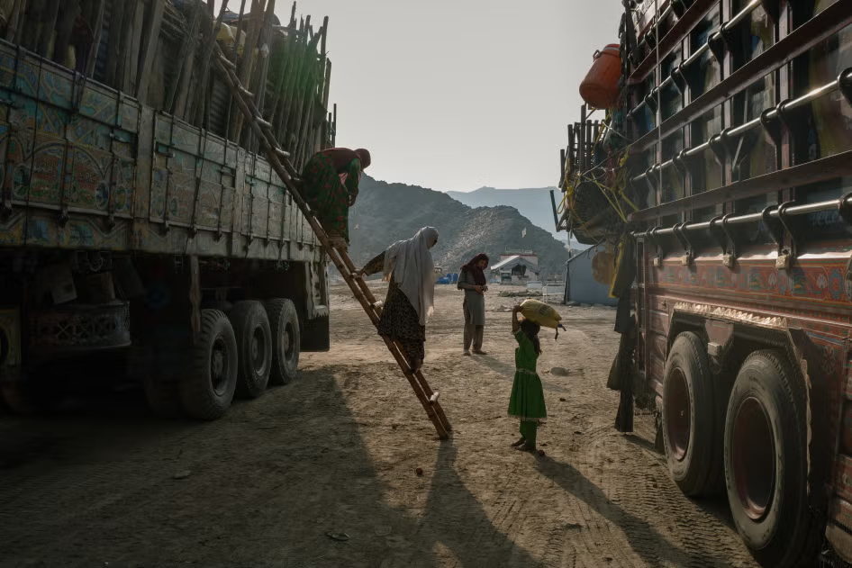

O romance distópico "O Conto da Aia"

Foto de Elke Scholiers/Getty Images
O romance distópico "O Conto da Aia", escrito por Margaret Atwood, chocou o mundo ao apresentar Gilead: uma teocracia totalitária onde as mulheres perderam todos os seus direitos civis, identidades e autonomia sobre os próprios corpos. No entanto, para milhões de mulheres no Afeganistão contemporâneo, essa distopia não é uma ficção literária ou um aviso sobre o futuro. É o cotidiano físico e psicológico imposto por um regime que espelha, com precisão assustadora, os mecanismos de controle descritos nas páginas do livro.
A conexão entre a obra e a realidade afegã vai muito além da privação do direito à educação e ao trabalho. Ambas as estruturas se sustentam através do silenciamento absoluto e da vigilância constante. Em Gilead, as mulheres são proibidas de ler, escrever e falar livremente. No Afeganistão atual, leis recentes proíbem as mulheres até mesmo de cantar ou falar em público, sob o pretexto de que suas vozes são íntimas e podem causar distração. A remoção da identidade feminina é o primeiro passo para a desumanização sistêmica.
Abaixo da superfície das restrições visíveis, reside a faceta mais delicada e brutal desse paralelo: a violência sexuais e físicas institucionalizadas. Na ficção de Atwood, o estupro é ritualizado e transformado em dever estatal. Na realidade do regime extremista afegão, casamentos forçados e precoces de meninas, muitas vezes com membros do próprio grupo governante, funcionam como uma forma de violência sexual legalizada pelo Estado. Sem canais de denúncia ou proteção legal, mulheres e jovens enfrentam abusos diários dentro de suas próprias casas, em um cenário onde o próprio corpo feminino é considerado propriedade pública ou moeda de troca política.
Essa perda de agência se estende ao ambiente digital e à forma como a imagem da mulher é tratada globalmente. A prática frequente de expor, compartilhar ou postar fotos de mulheres afegãs nas redes sociais — seja sob a justificativa de "conscientização" ou por puro voyeurismo digital — carrega consequências devastadoras. Em regimes de extrema vigilância, uma simples imagem na internet pode ser uma sentença de perseguição física ou punição severa pelas autoridades locais.
Além do risco iminente de segurança, a superexposição e a mercantilização visual da dor causam danos profundos à saúde psicológica e física dessas mulheres. Viver sob o medo constante da exposição gera quadros severos de ansiedade crônica, depressão profunda e estresse pós-traumático (TEPT). O sofrimento psicológico prolongado manifesta-se fisicamente no corpo através de dores crônicas, distúrbios do sono e exaustão extrema. Quando transformadas em meras imagens ou estatísticas na tela de um celular, as mulheres são despojadas de sua dignidade humana, restando-lhes o peso invisível de uma violência que ecoa tanto nas páginas dos livros quanto na vida real.
https://share.google/hIg32BvsJriufSh66 https://share.google/MN4IZORHaTd4m3Ktm https://share.google/pWaxJjVzhO4JmCLpU@li_yamauti